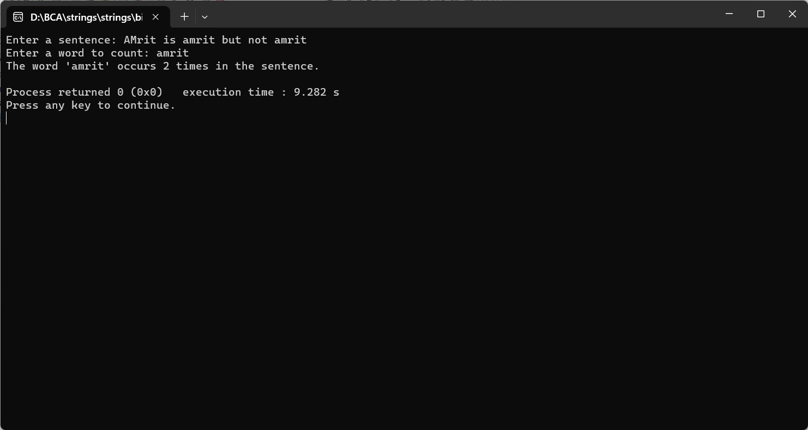

ENTER A SENTENCE FROM USER AND THEN ENTER THE WORD AND COUNT THE OCCURENCE OF THAT WORD IN THE SENTENCE
#include
#include
int main() {
char sentence[1000];
char word[100];
int count = 0;
printf("Enter a sentence: ");
fgets(sentence, sizeof(sentence), stdin);
printf("Enter a word to count: ");
scanf("%s", word);
// Remove the newline character from the input
sentence[strcspn(sentence, "\n")] = '\0';
char *token = strtok(sentence, " .,\t\n"); // Tokenizing the sentence
while (token != NULL) {
if (strcmp(token, word) == 0) {
count++;
}
token = strtok(NULL, " .,\t\n");
}
printf("The word '%s' occurs %d times in the sentence.\n", word, count);
return 0;
}
